8.2 Miscarriage
Miscarriage rates are notably high in pregnancies achieved through ART, primarily involving biochemical pregnancies and miscarriages. Miscarriage is broadly defined as the loss of a pregnancy before viability [7].
Definitions:
- The intentional termination of a pregnancy before 28 weeks of gestation or of a fetus weighing less than 1000 g is referred to as an abortion.
• A spontaneous pregnancy loss is termed a miscarriage.
Early miscarriage: The termination of a pregnancy before the 12th gestational week.
Late miscarriage: The termination of a pregnancy between the 12th and 28th weeks of gestation.
In this section, we will discuss the main clinical manifestations, typical ultrasound findings, and key diagnostic features of various types of miscarriage.
Clinical manifestations:
The primary symptoms of miscarriage include the following:
• Cessation of menstruation
• Positive pregnancy test
• Vaginal bleeding
• Lower back pain, abdominal cramps, and pain [8]
The presentation of symptoms varies based on the timing of the miscarriage:
Early miscarriages typically begin with vaginal bleeding, followed by abdominal pain.
Late miscarriages often present with abdominal pain first, followed by vaginal bleeding.
Classification of miscarriages:
Miscarriages are categorized based on the stage of development and clinical symptoms into the following:
• Threatened miscarriage
• Inevitable miscarriage
• Incomplete miscarriage
• Missed miscarriage
• Complete miscarriage
8.2.1 Threatened Miscarriage
1. Clinical overview
A threatened miscarriage represents the initial stage of potential pregnancy loss. Patients commonly present with symptoms such as light vaginal bleeding (or bloody discharge) and mild lower abdominal pain.
Key clinical features include the following:
• Cervix: Remains closed
• Amniotic sac: Intact
• Embryo and fetal heartbeats: Normal
Threatened miscarriages are often associated with luteal insufficiency or increased uterine sensitivity. With appropriate treatment, the pregnancy may continue. However, worsening symptoms, such as increased vaginal bleeding and intensified abdominal pain, indicate a higher risk of progression to an inevitable miscarriage.
2. Typical ultrasonic features
In cases of threatened miscarriage, ultrasound findings are generally unremarkable, with the following observations:
- The uterus, gestational sac, and embryo or fetus size are consistent with the gestational age.
• Fetal heartbeats are typically detectable.
• The internal cervical os remains closed.
In some cases, additional findings may include a limited crescent-shaped anechoic area or a cloud-like hypoechoic area adjacent to the gestational sac caused by the detachment of chorionic villi from the uterine wall and localized blood accumulation (see Fig. 8.5).
Color Doppler flow imaging (CDFI):
- Around the gestational sac: High-speed, low-resistance blood flow signals can be observed.
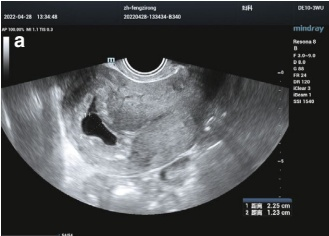
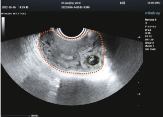
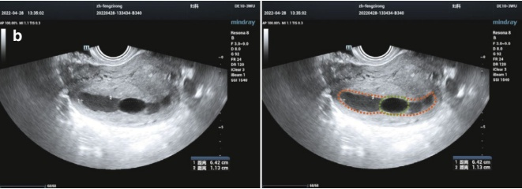
• Embryo or fetus: Heartbeat blood flow signals are detected.
- Hypoechoic or anechoic area: No significant blood flow signals are observed.
Fetal heart rate:
- Before 6.5 weeks of gestation: less than 100 bpm.
• At 9 weeks of gestation: up to 180 bpm.
• At 14 weeks of gestation: around 140 bpm.
- A fetal heart rate of $ \leq $110 bpm has shown higher diagnostic accuracy in predicting miscarriage [9].
- Differential diagnosis
(1) Threatened miscarriage vs. inevitable or incomplete miscarriage (early pregnancy):
In early pregnancy, before the appearance of an embryonic bud, a threatened miscarriage must be distinguished from an inevitable or incomplete miscarriage.
Clinical tip: In cases of mild vaginal bleeding, a follow-up ultrasound after 1 week is recommended to confirm the diagnosis.
(2) Threatened miscarriage with intrauterine hemorrhage vs. twin pregnancy: When intrauterine hemorrhage is detected, it should be differentiated from twin pregnancy:
A dichorionic twin pregnancy on ultrasound reveals two gestational sacs.
Each gestational sac is surrounded by a hyperechoic ring with a regular shape.
A yolk sac and embryonic structure are identifiable within each gestational sac.
8.2.2 Early Embryonic (Fetal) Demise
1. Clinical overview
Early embryonic demise, also referred to as a missed miscarriage or blighted ovum, represents an early stage in the natural course of miscarriage [10].
Key clinical features include the following:
History: Many patients have prior symptoms of a threatened miscarriage.
Symptoms:
• Cessation of menstruation and early pregnancy symptoms
- The gradual disappearance of pregnancy symptoms as the condition progresses Uterine size:
• No further uterine enlargement.
Uterus size may be smaller than expected for the gestational age.
Pregnancy test: May turn negative at the time of diagnosis.
- Typical ultrasonic features
On ultrasound, early embryonic demise is characterized by the following:
Gestational sac:
• An intact sac is visible within the uterine cavity.
- It may lack an embryo, or the embryo is present but shows no cardiac activity [10].
Diagnostic thresholds:
• Fetal demise is suspected when
• CRL > 6 mm without detectable cardiac activity.
• Gestational sac >20 mm without a visible embryo or yolk sac.
Confirmation:
To minimize diagnostic errors, the diagnosis should be confirmed with a follow-up ultrasound 7–14 days later [11]. (Refer to Figs. 8.6, 8.7, 8.8, 8.9, and 8.10 for examples.)
8.2.3 Incomplete Miscarriage
1. Clinical overview
An incomplete miscarriage refers to the partial expulsion of products of conception, with no intact gestational sac remaining [12].
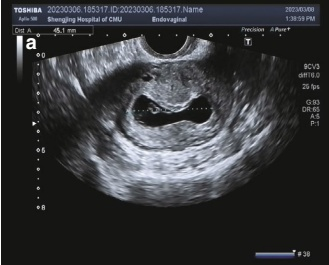
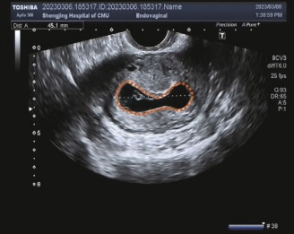
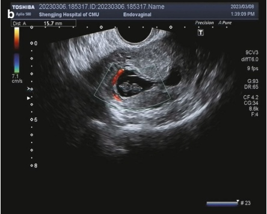
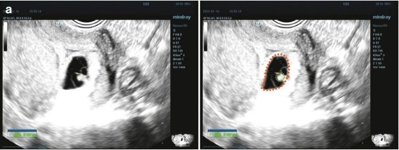
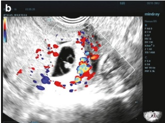
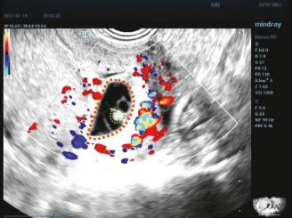
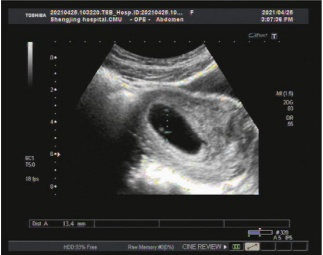
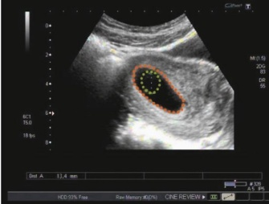
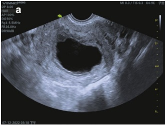
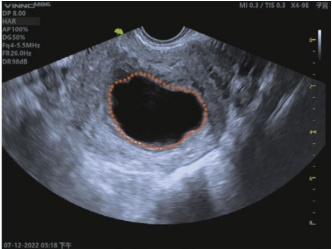
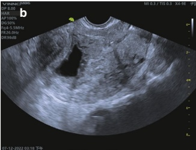
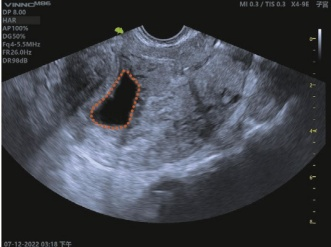
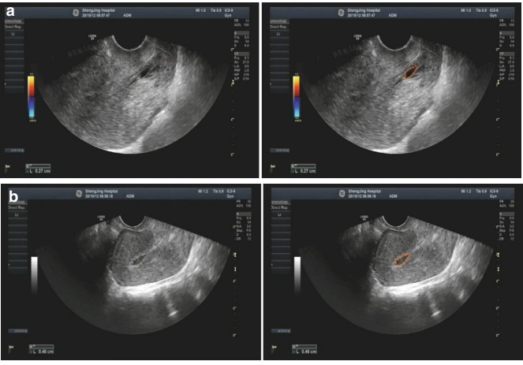
Key clinical features include the following:
Symptoms:
• Increased vaginal bleeding
• Intensified abdominal pain
Uterine size:
Typically smaller than expected for the gestational age.
However, in cases where the uterus is filled with blood clots, its size may match or exceed the gestational age.
Gynecologic examination:
• Dilated cervical opening with visible blood flow.
Pregnancy tissue may block the cervical canal or be partially expelled into the vagina, with remaining tissue (and blood clots) in the uterus.
2. Typical ultrasonic features
General findings:
- The uterus is typically smaller than expected for the gestational age.
• Endometrial thickness varies.
• Heterogeneous tissue is seen, with or without a visible gestational sac [13].
Distorted endometrial echoes (Fig. 8.11a) may represent retained placenta, decidual tissue, or blood within the uterine cavity.
The cervical canal may appear dilated, with pregnancy tissues partially occluding it.
CDFI and pulsed wave Doppler:
Blood flow signals are often detected within retained uterine contents (Fig. 8.11b).
Low-resistance blood flow signals may indicate trophoblastic tissue.
When residual contents consist only of fetal membranes or decidual tissue, no blood flow signals are observed within these structures.
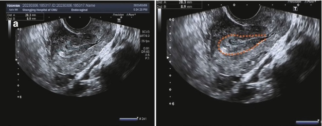
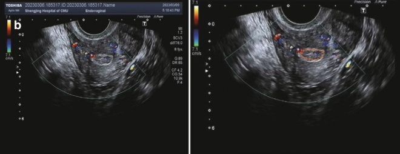
3. Differential diagnosis
An incomplete miscarriage must be differentiated from a pseudogestational sac, which may occur in cases of ectopic pregnancy.
Irregular vaginal bleeding is often observed in ectopic pregnancies.
Ultrasonic features of a pseudogestational sac:
• Appears as an anechoic central area, representing accumulated blood
• Surrounded by a peripheral hyperechoic pattern, corresponding to the decidua
• Typically located centrally within the uterus
- No detectable blood flow signals within the pseudogestational sac, as confirmed by Doppler imaging
By contrast, an incomplete miscarriage may show heterogeneous retained tissue with associated blood flow signals in the uterus.
8.2.4 Complete Miscarriage
1. Clinical overview
A complete miscarriage occurs when all pregnancy tissues are expelled from the uterus with the following clinical features:
• Relief from abdominal pain
• Closed cervical orifices
• Well-contracted uterus, returning to near-normal size
Minor or no vaginal bleeding
- Typical ultrasonic features
An empty uterine cavity following the initial visualization of an intrauterine gestational sac (with or without an embryo).
If associated with a positive pregnancy test and a rapid decline in serum hCG levels, this may be termed a failed pregnancy of unknown location until an ectopic pregnancy is excluded [14].
The uterus is either normal in size or slightly enlarged.
• The pregnancy tissue has been completely expelled.
Endometrium appears thin and thread-like, with possible minor blood accumulation.
No patchy or clustered echoes are visible within the uterine cavity.